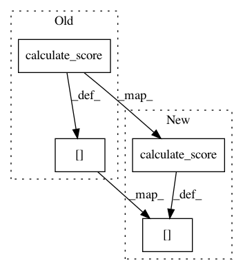

46ae0787a570a8c7ec79c6d46cb66145f129c284,autosklearn/ensembles/ensemble_selection.py,EnsembleSelection,_slow,#EnsembleSelection#Any#Any#,136
Before Change
for j, pred in enumerate(predictions):
ensemble.append(pred)
ensemble_prediction = np.mean(np.array(ensemble), axis=0)
scores[j] = self.metric._optimum - calculate_score(
solution=labels,
prediction=ensemble_prediction,
task_type=self.task_type,
metric=self.metric,
all_scoring_functions=False)
ensemble.pop()
best = np.nanargmin(scores)
ensemble.append(predictions[best])
trajectory.append(scores[best])
After Change
// when all_scoring_functions=False, we know it will be a float
calculated_score = cast(
float,
calculate_score(
solution=labels,
prediction=ensemble_prediction,
task_type=self.task_type,
metric=self.metric,
all_scoring_functions=False
)
)
scores[j] = self.metric._optimum - calculated_score
ensemble.pop()
best = np.nanargmin(scores)
ensemble.append(predictions[best])
In pattern: SUPERPATTERN
Frequency: 4
Non-data size: 4
Instances
Project Name: automl/auto-sklearn
Commit Name: 46ae0787a570a8c7ec79c6d46cb66145f129c284
Time: 2020-07-29
Author: 44504424+franchuterivera@users.noreply.github.com
File Name: autosklearn/ensembles/ensemble_selection.py
Class Name: EnsembleSelection
Method Name: _slow
Project Name: automl/auto-sklearn
Commit Name: eb0ecdd3085c515a528f60684dca50b9caa6764a
Time: 2018-03-21
Author: feurerm@informatik.uni-freiburg.de
File Name: autosklearn/ensembles/ensemble_selection.py
Class Name: EnsembleSelection
Method Name: _slow
Project Name: automl/auto-sklearn
Commit Name: eb0ecdd3085c515a528f60684dca50b9caa6764a
Time: 2018-03-21
Author: feurerm@informatik.uni-freiburg.de
File Name: autosklearn/ensembles/ensemble_selection.py
Class Name: EnsembleSelection
Method Name: _fast
Project Name: automl/auto-sklearn
Commit Name: 46ae0787a570a8c7ec79c6d46cb66145f129c284
Time: 2020-07-29
Author: 44504424+franchuterivera@users.noreply.github.com
File Name: autosklearn/ensembles/ensemble_selection.py
Class Name: EnsembleSelection
Method Name: _fast